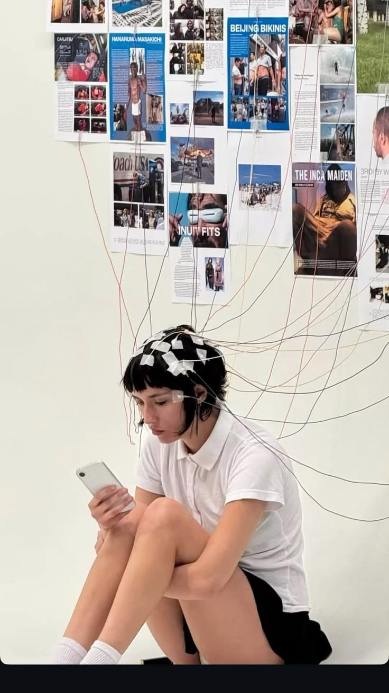
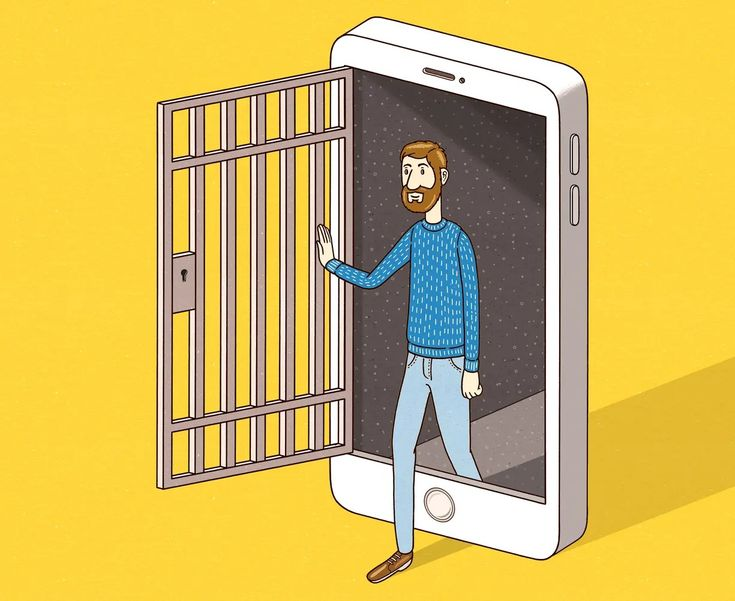

To become the one in control takes time
The path to recovery is a journey
To slowly be able to get off your phone without getting more attached to it by accident, here are some ways you could get started. First off this process will take time and there will be step backs, this is an addiction and as one it is hard to get rid of it. I have started by seeing when do I use my phone, when it is not needed but I still use it. These moments can be from using it while eating, waiting for something, or even using the bathroom. Chose only a couple of this times and start by trying not use your phone. Like if you are waiting for something don't go on your phone, leave it in your bag or in your pocket and if you have a hard time passing the time you can do other things like reading a book or talking to someone. However I recommend to have times where you don't do anything because your brain is always stimulated because of your phone then it need to feel bored as well, it is very important for brain health. Over time you will be able to go hours without have a need to be on your phone and it make its hold on your life lessen. You can also create timers for the apps you are usually on the most to limit your time , however, I recommend to add this on after you try the spend time away from your phone because there are ways to get around those timers which can be easy to change it you are heavily addicted.


IT's Time to Confront Our Global Addiction_TED Talk The Impact of Social Media on Mental Health How Boredom Can Lead to Your Most Brilliant Ideas The Science of Boredom Boredom–understanding the emotion and its impact on our lives: an African perspective